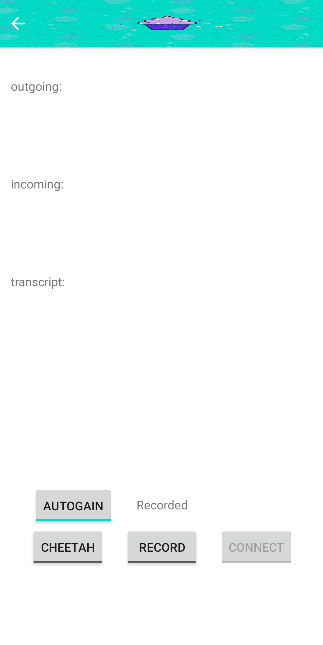

For my capstone project, I got involved in developing an smartphone application that enhanced the preexisting phone calls. Althought the initial concept was to enhance the incoming phone calls that had poor sound quality due to its older equipment, we realized that processing incoming landline audio without the consent of the opponent was illegal within Washington State. Additionally, neither Android nor iOS provided access to the phone call data. Thus, we had to modify the medium to Voice-over-IP calls (VoIP). I was responsible for connecting the APIs that were used to process the audio to reduce noise and produce a real-time transcript.